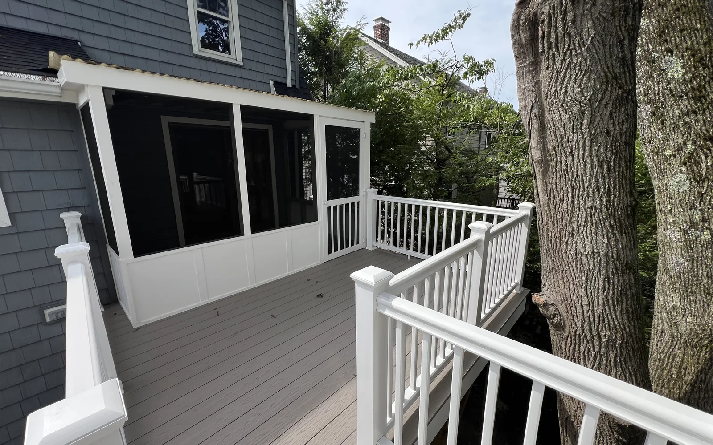
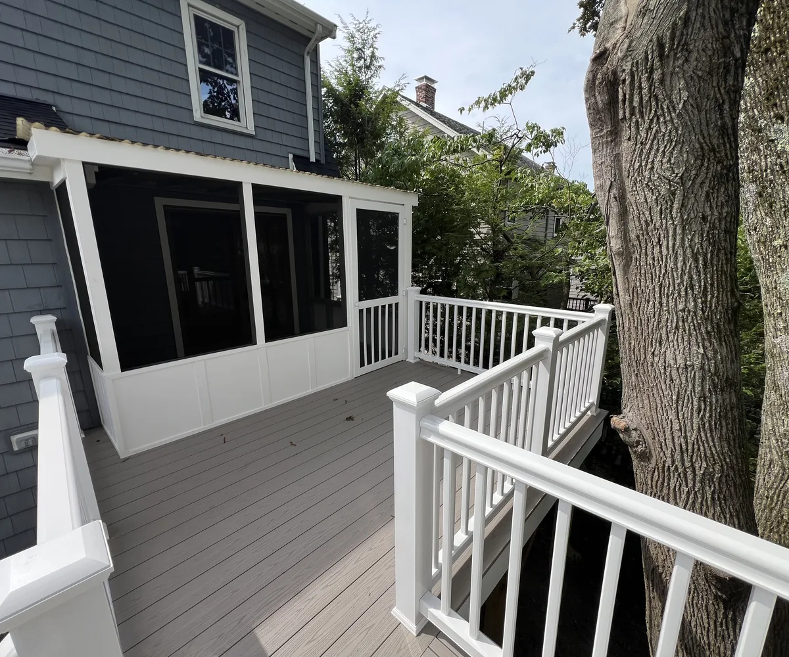
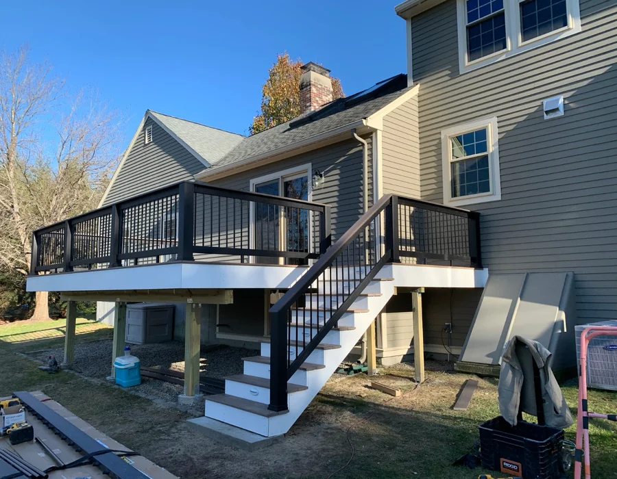

Wakefield deck contractors
Wakefield deck contractors for outdoor spaces built around structure and finish
A deck or patio in Wakefield should feel solid before it looks finished. DeFaria Construction helps homeowners plan around structure, access, railings, stairs, exposure and everyday use.
Local project planning
Wakefield deck work should account for access, exposure and how the yard is used.
Wakefield deck work should account for outdoor use near wooded or lake-area settings, stairs, railings, privacy and how the deck connects to the main living space. The right conversation covers size, stairs, railings, connection points, traffic flow, material expectations and how the outdoor space should connect with the home.
This page covers Wakefield deck searches around Greenwood, Montrose, Wakefield Junction, Lakeside, Downtown Wakefield, West Side, where outdoor living work needs a clear plan before pricing.
- Clear estimate conversations before the project starts.
- Direct communication with homeowners and business owners.
- Local coverage across Essex County and Middlesex County.
Wakefield is a strong bridge into Middlesex County because projects here can be residential, lake-area, commuter-town or local storefront. The page should feel different from Woburn by speaking to established neighborhoods, Lakeside considerations, Greenwood and Montrose homeowners, and the need for clear planning before a project affects daily routines.
For Wakefield deck projects, the page should mention wooded or lake-area settings, privacy, stairs, railing decisions, outdoor circulation and whether the deck is a family-use upgrade or a replacement for an older outdoor structure.
Wakefield neighborhood planning note: Greenwood, Montrose, Wakefield Junction, Lakeside and Downtown Wakefield, West Side do not all create the same project conditions. A useful page should help the visitor think about access, parking, existing structure, privacy, daily use and whether the project is a targeted update or a larger scope conversation.
Residential context for Wakefield: Wakefield homes often need remodeling that respects established layouts, lake-area access, older finishes and the owner choice between targeted updates and broader interior work. A Wakefield addition should connect the new square footage to the way the home is used, especially when access, driveway layout, privacy or roofline transitions affect the plan.
Commercial and outdoor context for Wakefield: Wakefield commercial remodeling can involve offices, service spaces and local storefronts where a clear scope helps avoid disruption for staff, customers and neighboring businesses. Wakefield deck work should account for outdoor use near wooded or lake-area settings, stairs, railings, privacy and how the deck connects to the main living space.
Areas covered
A local deck page helps homeowners compare repair, replacement and build quality faster.
It gives visitors enough context to decide whether DeFaria Construction is relevant before they call.
- Greenwood
- Montrose
- Wakefield Junction
- Lakeside
- Downtown Wakefield
- West Side
Project photos
Deck photos for Wakefield outdoor projects
Outdoor pages need more than service copy. These photos help Wakefield homeowners compare structure and finish before choosing between repair, replacement or a larger outdoor upgrade.



Experience
Why homeowners work with DeFaria
DeFaria Construction is a local construction and remodeling company serving homeowners and business owners in Massachusetts. The company records show direct owner involvement from Luiz DeFaria and BBB credibility as part of the trust stack, so the page is written around project clarity, service area fit and practical next steps instead of repeating a city name without value.
The goal is to help someone searching for Wakefield deck contractors understand the type of work, the local areas covered and how to start a direct conversation with the contractor before requesting an estimate.
Request an estimateFAQ
Common questions about Wakefield deck contractors
What should a Wakefield deck estimate include?
A deck estimate should discuss size, access, railings, stairs, connection points, material expectations, existing framing conditions and exposure of the area where the deck will be built.
Should a Wakefield homeowner repair or replace an older deck?
That depends on the framing, ledger connection, railings, stairs and board condition. A walkthrough should identify whether the issue is surface wear or a structural concern before pricing the project.
Why make a Wakefield deck page?
Deck searches are local. A Wakefield-specific plan works better than a generic outdoor living pitch because it addresses neighborhoods, exposure and how the outdoor space connects to the home.